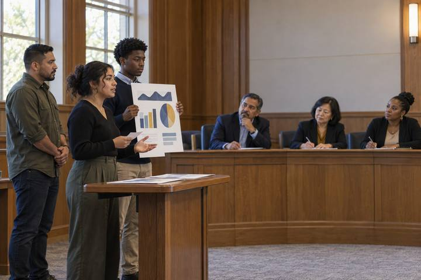
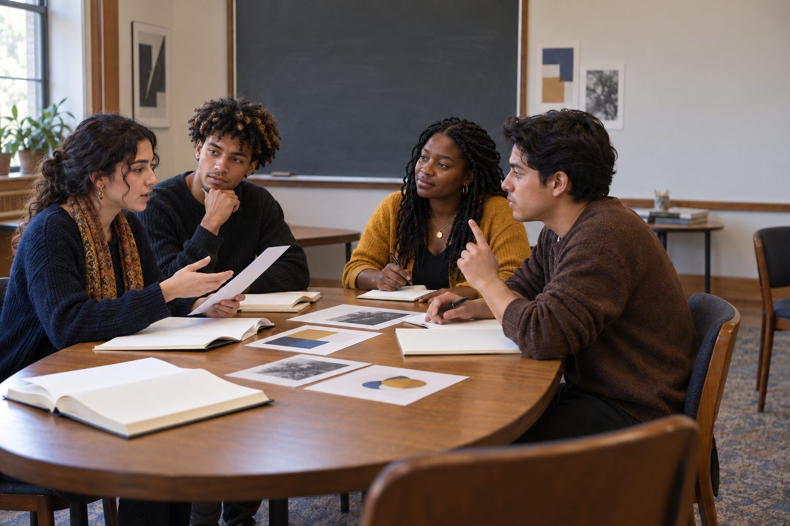

Student learningfor Grades 9–12, Higher Ed
Policy Makers
Student teams research, draft, and pitch an AI and technology-use policy proposal to a mock board, and must pass the same five-question check real leaders use.

All activities Student learning
In a structured academic controversy, students argue both sides of an open question: is it fair for AI tools to learn from artists' work, and who gets credit for what they make?
Generative image, music, and writing tools learned their patterns from enormous collections of human-made work, often gathered without asking the creators. Whether that is fair, whether it is legal, and who owns what the tools produce are questions that courts, lawmakers, artists, and companies are still actively disputing, and the answers differ from country to country. Instead of a winner-take-all debate, students use a structured academic controversy: each pair argues one side, then switches and argues the other, then drops the sides and searches for the best shared recommendation. The goal is not a verdict on the law; it is the ability to reason carefully about an unsettled ethical question and act respectfully toward creators in the meantime.
Hook
Mark one wall "Completely fair" and the opposite wall "Completely unfair." Read: "An AI image tool learned to draw by studying millions of images online, including yours, without asking you. Now anyone can type your name and get pictures in your style." Students stand where they are. Ask two students from different spots to explain their position in one sentence. Say: "Today you'll argue for a spot you might not be standing in."
Facilitator noteNote where students stand. You'll ask them to line up again at the end to see who moved and why.
Model
Explain plainly: generative AI tools learn statistical patterns (what shapes, colors, words, and sounds tend to go together) from very large collections of examples called training data. The tool usually doesn't store a copy of each image to paste back, but it can produce work strongly resembling a particular artist's style, and sometimes near-copies. Then name what is genuinely unsettled: whether training on copyrighted work without permission is allowed, whether creators should be asked or paid, and who, if anyone, owns AI-generated output. In the U.S., copyright has traditionally required a human author, and how that applies to work made with AI assistance is still being worked out. Other countries are taking different approaches. Read Handout A together.
Facilitator noteResist stating outcomes. If a student cites a lawsuit or rule they heard about, say: "Good. Where would we go to check its current status?" and move on. The activity doesn't depend on any legal result.
Explore
In each group of four, one pair takes Position A: "Training AI on publicly posted art without permission is fair, and Jordan's poster is fine." The other takes Position B: "Training without consent is unfair to artists, and Jordan's poster crosses a line." Pairs read all twelve Perspective Cards and choose the four strongest for their side, writing their three best arguments on Handout C.
Facilitator notePush students to use the cards that are hard for their side, too. The strongest arguments answer the other side's best point.
Practice
Pair A presents for 3 minutes while Pair B takes notes. Pair B must then restate Pair A's argument to Pair A's satisfaction before responding. Swap: Pair B presents, Pair A restates. Then pairs switch positions and have 3 minutes to add one new argument for the side they just argued against.
Facilitator noteThe restatement is the heart of it. Don't let a pair move on until the other pair says, "Yes, that's our argument."
Apply
Groups of four drop their positions and answer together on chart paper: "While the law is unsettled, what should our class do when we use AI tools for creative work?" Their recommendation must address consent (whose style or work we invoke), credit (how we label AI involvement), and respect (what we won't do). Groups post charts for a quick gallery walk and put a star on the recommendation from another group they'd adopt.
Facilitator noteStrong recommendations often include: don't prompt with a living artist's name, label AI-assisted work, credit human sources, and prefer tools whose training practices are disclosed. Let students discover these.
Reflect
Students return to the fair/unfair line. Ask anyone who moved: "What argument moved you?" Ask anyone who didn't: "What's the strongest argument against your position?" Each student writes on Handout C's final box one thing they will do differently the next time they use an AI creative tool.
Designed unplugged. The case, the perspective cards, and the structured controversy need only paper, a timer, and chart paper. Discussion is the learning.
Run the controversy in a video meeting with breakout rooms for each group of four and pairs in sub-rooms for preparation. Post the Perspective Cards as a slide deck and have groups write their recommendation in a shared document; the class votes by commenting. Students should not use AI image tools for this lesson; the question is about them, and generating images in a named artist's style would undercut the discussion.
Does it need a screen? Better unplugged: the evidence of learning is students accurately restating arguments they disagree with and building consensus, which face-to-face talk does best. A shared document helps only when groups need to keep their recommendations for a later class policy.
What you should be able to see or collect if it worked.
Students argue both sides of AI training on artists' work and co-write a credit rule, reasoning about intellectual property in the ethics-and-laws substrand.
Use the class's starred recommendation as the credit-and-labeling rule for the next creative project. At home, students can ask a family member who makes things (cooking, crafts, music, writing) how they'd feel if an AI learned from their work, and bring the answer back.